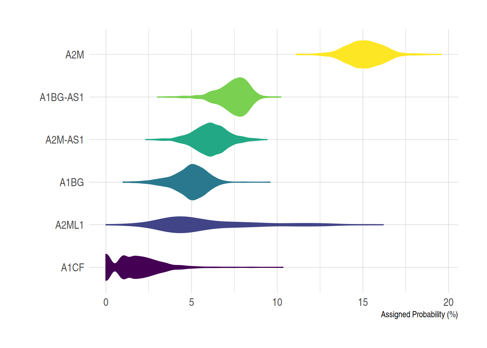
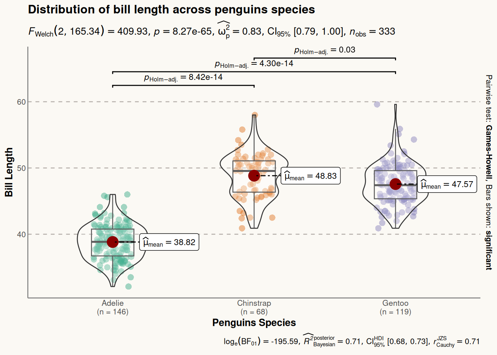

# Installing necessary packages
if (!requireNamespace("readr", quietly = TRUE)) {
install.packages("readr")
}
if (!requireNamespace("tidyr", quietly = TRUE)) {
install.packages("tidyr")
}
if (!requireNamespace("gghalves", quietly = TRUE)) {
install.packages("gghalves")
}
if (!requireNamespace("dplyr", quietly = TRUE)) {
install.packages("dplyr")
}
if (!requireNamespace("ggplot2", quietly = TRUE)) {
install.packages("ggplot2")
}
if (!requireNamespace("forcats", quietly = TRUE)) {
install.packages("forcats")
}
if (!requireNamespace("hrbrthemes", quietly = TRUE)) {
install.packages("hrbrthemes")
}
if (!requireNamespace("viridis", quietly = TRUE)) {
install.packages("viridis")
}
if (!requireNamespace("ggstatsplot", quietly = TRUE)) {
install.packages("ggstatsplot")
}
if (!requireNamespace("palmerpenguins", quietly = TRUE)) {
install.packages("palmerpenguins")
}
# Load packages
library(readr)
library(tidyr)
library(ggplot2)
library(dplyr)
library(gghalves)
library(forcats)
library(hrbrthemes)
library(viridis)
library(ggstatsplot)
library(palmerpenguins)Violin Plot
A violin plot combines elements of a density plot and a box plot to visualize data distribution. It displays key statistical information, including the median, quartiles, minimum, and maximum values. Violin plots are particularly useful for comparing distributions across different groups, offering a more intuitive representation than traditional box plots by revealing the shape of the data distribution.
- Box Component: The white dot/line represents the median, while the black bar indicates the interquartile range (IQR).
- Kernel Density Component: Shows the density of data points at different positions, providing insights into clustering patterns.
Example

Setup
System Requirements: Cross-platform (Linux/MacOS/Windows)
Programming language: R
Dependent packages:
readr;tidyr;ggplot2;dplyr;gghalves;forcats;hrbrthemes;viridis;ggstatsplot;palmerpenguins
Data Preparation
We used the built-in R datasets (iris, penguins) and the TCGA-BRCA.htseq_counts.tsv dataset from UCSC Xena DATASETS. Selected genes were chosen for demonstration purposes.
# Load the TCGA-BRCA gene expression dataset from a processed CSV file
data_counts <- readr::read_csv("https://bizard-1301043367.cos.ap-guangzhou.myqcloud.com/TCGA-BRCA.htseq_counts_processed.csv")
# Load built-in R dataset iris
data_wide <- iris[ , 1:4] # Take the data in columns 1-4 of the iris database as an example
# Load built-in R dataset penguins
data("penguins", package = "palmerpenguins")
data_penguins <- drop_na(penguins) # Remove missing values
# Manually create a demonstration dataset with grouped values
data <- data.frame(
name=c( rep("A",500), rep("B",500), rep("B",500), rep("C",20), rep('D', 100) ),
value=c( rnorm(500, 10, 5), rnorm(500, 13, 1), rnorm(500, 18, 1), rnorm(20, 25, 4), rnorm(100, 12, 1) )
)
sample_size <- data %>%
group_by(name) %>%
summarize(num=n()) # Compute the sample size for each group Visualization
1. Basic Violin Plot
Example 1: Basic Violin Plot with Manually Created Data
# Basic Violin Plot
p <- ggplot(data, aes(x=name, y=value, fill=name)) +
geom_violin()
p
Example 2: Basic Violin Plot with the iris Dataset
# Transform the `iris` dataset from wide format to long format. Use the gather function to collect the data in each column into two new columns named "MesureType" and "Val", so that one row represents one observation.
data_long_iris <- data_wide %>%
gather(key = "MeasureType", value = "Value")
ggplot(data_long_iris, aes(x = MeasureType, y = Value, fill = MeasureType)) +
geom_violin() 
iris Dataset
Example 3: Violin Plot with TCGA-BRCA Gene Expression Data
example_counts1 <- data_counts[1:5,] %>%
gather(key = "sample",value = "gene_expression",3:1219) # Select five example genes for visualization: A1BG, A1BG-AS1, A1CF, A2M, and A2M-AS1.
ggplot(example_counts1, aes(x=gene_name, y=gene_expression, fill=gene_name)) +
geom_violin()
TCGA-BRCA dataset
2. Horizontal Violin Plot
The x and y axes can be flipped using coord_flip().
example_counts2 <- data_counts[1:6,] %>%
gather(key = "sample",value = "gene_expression",3:1219) %>%
mutate(gene_name= fct_reorder(gene_name,gene_expression ))
ggplot(example_counts2, aes(x=gene_name, y=gene_expression, fill=gene_name, color=gene_name)) +
geom_violin() +
scale_fill_viridis(discrete=TRUE) +
scale_color_viridis(discrete=TRUE) +
theme_ipsum() + # Improve plot appearance
theme(legend.position="none" ) +
coord_flip() + # flip the x and y axes
xlab("") +
ylab("Assigned Probability (%)")

TCGA-BRCA dataset
3. Violin Plot with Boxplot
In practical visualization applications, a box plot can be added to a violin plot using geom_boxplot(), which helps in visually comparing the distribution of the data.
example_data <- data %>%
left_join(sample_size) %>%
mutate(myaxis = paste0(name, "\n", "n=", num)) # The `myaxis` variable is created to display sample size on the x-axis.
ggplot(example_data, aes(x=myaxis, y=value, fill=name)) +
geom_violin(width=1.4) +
geom_boxplot( width=0.1,color="grey", alpha=0.2) + # Draw a box plot. A small width value makes the box plot inside the violin plot.
scale_fill_viridis(discrete = TRUE) +
theme_ipsum() + # Beautify the graph
theme(
legend.position="none",
plot.title = element_text(size=11)
) +
ggtitle("A Violin plot wrapping a boxplot") + # Set the title
xlab("")
Another Violin Plot with Box Plot using the TCGA-BRCA Gene Expression Data
example_counts3 <- data_counts[1:5,] %>%
gather(key = "sample", value = "gene_expression",3:1219) %>%
mutate(gene_name= fct_reorder(gene_name,gene_expression ))
ggplot(example_counts3, aes(x=gene_name, y=gene_expression, fill=gene_name, color=gene_name)) +
geom_violin() +
geom_boxplot( width=0.1,color="grey", alpha=0.2)+
scale_fill_viridis(discrete=TRUE) +
scale_color_viridis(discrete=TRUE) +
theme_ipsum() + # Beautify the graph
theme(legend.position="none" ) 
TCGA-BRCA dataset
4. Grouped Violin Plot
On the basis of the basic violin plot, we can achieve intra-group comparison by setting the fill value.
The example below demonstrates intra-group comparison using the fill aesthetic. In this case, the penguins dataset is used. The x variable represents the species, and fill=sex creates an intra-group classification to visualize the comparison of flipper lengths within each species, grouped by gender.
ggplot(data_penguins, aes(fill=sex, y=flipper_length_mm, x=species)) + # Use X as the major classification and fill as the intra-group classification
geom_violin(position="dodge", alpha=0.5, outlier.colour="transparent") +
scale_fill_viridis(discrete=T, name="") +
theme_ipsum() 
penguins dataset
5. Half-Violin Plot
A half-violin plot is useful for visualizing a large amount of data in a compact form. We can use the geom_half_violin function to display two groups separately.
In the following example, we visualize the flipper lengths of penguins for both species and genders, by plotting female and male penguins on opposite sides of the plot.
# Separate the data for female and male penguins
data_female <- data_penguins %>% filter(sex == "female")
data_male <- data_penguins %>% filter(sex == "male")
# Plot the half-violin plot for both groups (females on the right and males on the left)
ggplot() +
geom_half_violin(
data = data_female,
aes(y = flipper_length_mm, x = species),
position = position_dodge(width = 1),
scale = 'width',
colour = NA,
fill = "#9370DB",
alpha = 0.8, ## Set transparency
side = "r"
) +
geom_half_violin(
data = data_male,
aes(y = flipper_length_mm, x = species),
position = position_dodge(width = 1),
scale = 'width',
colour = NA,
fill = "#FFFF00",
alpha = 0.6,
side = "l"
)
penguins dataset
6. Violin Plot Using the ggstatsplot Package
The ggstatsplot package extends ggplot2 by adding powerful statistical visualizations. The ggbetweenstats() function allows the creation of combined violin plots, box plots, and scatter plots.
In the following example, we visualize the distribution of bill lengths across different penguin species using the penguins dataset. We further enhance the plot’s aesthetics using the theme() function.
plt <- ggbetweenstats(
data = data_penguins,
x = species,
y = bill_length_mm
) +
# Beautification
labs( ## Add labels and title
x = "Penguins Species",
y = "Bill Length",
title = "Distribution of bill length across penguins species"
) +
theme(
axis.ticks = element_blank(),
axis.line = element_line(colour = "grey50"),
panel.grid = element_line(color = "#b4aea9"),
panel.grid.minor = element_blank(),
panel.grid.major.x = element_blank(),
panel.grid.major.y = element_line(linetype = "dashed"),
panel.background = element_rect(fill = "#fbf9f4", color = "#fbf9f4"),
plot.background = element_rect(fill = "#fbf9f4", color = "#fbf9f4")
)
plt

ggstatsplot Package
Application
1. Basic Violin Plot

Figure 10 e is a violin plot of the relative abundances of circRNAs in seven types of cancer tissues and their corresponding normal tissues [1].
2. Grouped Violin Plot

The above violin plot analyzes and compares the levels and distributions of 31 proteins and mRNAs in single A549 cells [2].
3. Half-Violin Plot

Figure 12 E uses a half-violin plot to analyze the clone size distribution of WT clones in WT intestines (left) or M−/+ intestines (middle and right figures) [3].
4. Violin Plot with Boxplot

Figure 13 D shows the expected median MSD and distribution of droplets attached to the substrate (noise) and in water (stimulation), as well as the nanoscale RMS displacement [4].
Reference
[1] Zheng Q, Bao C, Guo W, Li S, Chen J, Chen B, Luo Y, Lyu D, Li Y, Shi G, Liang L, Gu J, He X, Huang S. Circular RNA profiling reveals an abundant circHIPK3 that regulates cell growth by sponging multiple miRNAs. Nat Commun. 2016 Apr 6;7:11215. doi: 10.1038/ncomms11215. PMID: 27050392; PMCID: PMC4823868.
[2] Gong H, Wang X, Liu B, Boutet S, Holcomb I, Dakshinamoorthy G, Ooi A, Sanada C, Sun G, Ramakrishnan R. Single-cell protein-mRNA correlation analysis enabled by multiplexed dual-analyte co-detection. Sci Rep. 2017 Jun 5;7(1):2776. doi: 10.1038/s41598-017-03057-5. PMID: 28584233; PMCID: PMC5459813.
[3] Kolahgar G, Suijkerbuijk SJ, Kucinski I, Poirier EZ, Mansour S, Simons BD, Piddini E. Cell Competition Modifies Adult Stem Cell and Tissue Population Dynamics in a JAK-STAT-Dependent Manner. Dev Cell. 2015 Aug 10;34(3):297-309. doi: 10.1016/j.devcel.2015.06.010. Epub 2015 Jul 23. PMID: 26212135; PMCID: PMC4537514.
[4] Cribb JA, Osborne LD, Beicker K, Psioda M, Chen J, O’Brien ET, Taylor Ii RM, Vicci L, Hsiao JP, Shao C, Falvo M, Ibrahim JG, Wood KC, Blobe GC, Superfine R. An Automated High-throughput Array Microscope for Cancer Cell Mechanics. Sci Rep. 2016 Jun 6;6:27371. doi: 10.1038/srep27371. PMID: 27265611; PMCID: PMC4893602.
[5] Wickham H, Vaughan D, Girlich M (2024). tidyr: Tidy Messy Data. R package version 1.3.1, https://CRAN.R-project.org/package=tidyr.
[6] H. Wickham. ggplot2: Elegant Graphics for Data Analysis. Springer-Verlag New York, 2016.
[7] Wickham H, François R, Henry L, Müller K, Vaughan D (2023). dplyr: A Grammar of Data Manipulation. R package version 1.1.4, https://CRAN.R-project.org/package=dplyr.
[8] Tiedemann F (2022). gghalves: Compose Half-Half Plots Using Your Favourite Geoms. R package version 0.1.4, https://CRAN.R-project.org/package=gghalves.
[9] Wickham H (2023). forcats: Tools for Working with Categorical Variables (Factors). R package version 1.0.0, https://CRAN.R-project.org/package=forcats.
[10] Rudis B (2024). hrbrthemes: Additional Themes, Theme Components and Utilities for ‘ggplot2’. R package version 0.8.7, https://CRAN.R-project.org/package=hrbrthemes.
[11] Simon Garnier, Noam Ross, Robert Rudis, Antônio P. Camargo, Marco Sciaini, and Cédric Scherer (2024). viridis(Lite) - Colorblind-Friendly Color Maps for R. viridis package version 0.6.5.
[12] Patil, I. (2021). Visualizations with statistical details: The ‘ggstatsplot’ approach. Journal of Open Source Software, 6(61), 3167, doi:10.21105/joss.03167
[13] Horst AM, Hill AP, Gorman KB (2020). palmerpenguins: Palmer Archipelago (Antarctica) penguin data. R package version 0.1.0. https://allisonhorst.github.io/palmerpenguins/. doi: 10.5281/zenodo.3960218.